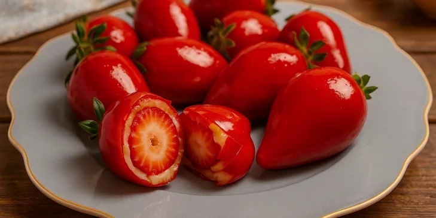

Morango Do Amor
Delicioso morango do amor: fruta fresca coberta por uma camada crocante de açúcar caramelizado, perfeita para adoçar qualquer momento.
- Tempo : 40Min
- Rendimento : 12 Porções
- Dificuldade: Média
Ingredientes
- 12 Morangos
- 3 colheres (sopa) de leite em pó
- 1 colher (sopa) de manteiga
- 1 e 1/2 xícara de água
- gotinhas de corante vermelho
- 1 lata de leite condensado
- 1/2 caixa de creme de leite
- 2 e 1/2 xícaras de açúcar
- 2 colheres (sopa) de vinagre
Modo de Preparo
- Lave os morangos, remova o cabinho com as folhas e seque-os bem. Reserve.
- Prepare o brigadeiro branco misturando leite condensado, leite em pó, creme de leite e manteiga em fogo médio.
- Mexa até engrossar, ficar bem consistente e soltar do fundo da panela.
- Deixe esfriar completamente coberto com plástico filme.
- Separe bolinhas de brigadeiro e abra na mão até formar um disco. Você pode untar as mãos para não grudar.
- Coloque o morango no meio e puxe a massa do brigadeiro em volta até grudar e cobrir o morango por inteiro.
- Enrole na mão para deixar bem uniforme.
- Espete no palito sem atravessar e deixe na geladeira por 10 minutos enquanto prepara a calda para manter firme.
- Para a calda de caramelo, misture açúcar, água, vinagre e corante antes de ligar o fogo.
- Depois ligue em fogo e não mexa mais.
- Cozinhe em fogo médio para baixo por cerca de 15 minutos até borbulhar e chegar em ponto de bala dura. Se tiver um termômetro culinário, deve atingir 150ºC. Caso não tenha, teste pingando uma gota do caramelo em um copo com água fria e veja se endurece.
- Tire a calda de caramelo do fogo e cubra os morangos com ela, escorra o excesso e coloque-os sobre um recipiente com papel-manteiga ou untado.
- Deixe secar e pronto! Se quiser pode tirar do palito depois ou comer assim mesmo.